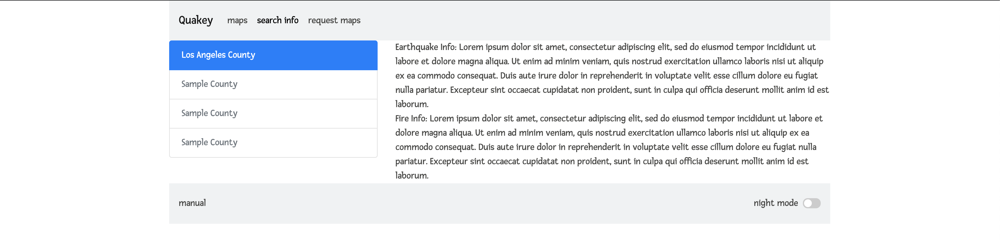
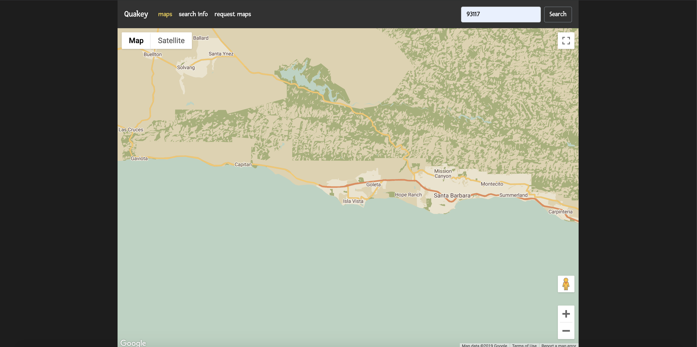
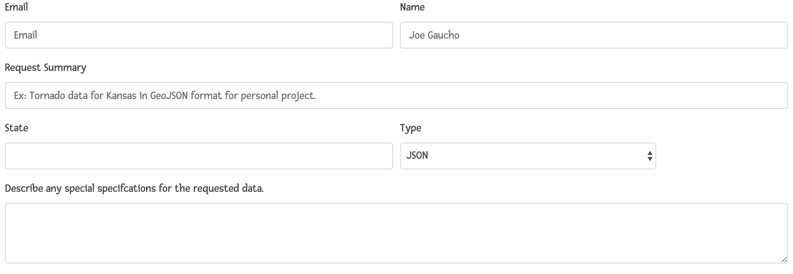

The map visualizes the magnitude of past earthquakes. By default, the map is centered in California.
The more recent earthquakes will be more transparent. Hue and scale of the circles indicate the magnitude of the
earthquake in that general location.
The search bar allows users to view specific locations. Searching can be performed with zipcode or city/state.
After submitting a location, the map will pan and zoom over to it.

This page will show general earthquake information about some major counties in California. It is intended to
be informative. Visitors can view historical trends and data pertaining to earthquake activities for the given
counties.

Night mode is a feature that serves to reduce eye strain. It is better suited for use in dimly-lit settings.
This feature should also preserve battery usage on mobile devices. The main pages will have a toggle switch on
the bottom right of the page to use this feature.

If there is additional information, feel free to request it through this form. Simply fill out the form and
submit it.